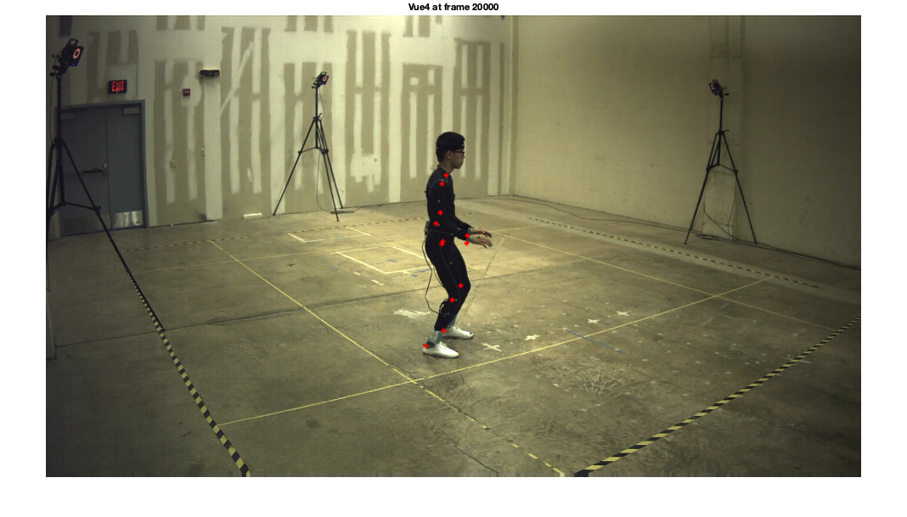

Contents
%{ Emmanuel & Guru EE 454 Project 2 November 1st, 2018 %} clc S = profile('INFO');
Loading Files
filenamevue2mp4 = 'Subject4-Session3-24form-Full-Take4-Vue2.mp4'; vue2video = VideoReader(filenamevue2mp4); filenamevue4mp4 = 'Subject4-Session3-24form-Full-Take4-Vue4.mp4'; vue4video = VideoReader(filenamevue4mp4);
Reading the 3D joint data
%{ X coor, Y coor and Z coor and confcoor are arrays that store the coordinate matrices associated with respective mocapFnum, which is also stored %} mocapFnum = 1000; %i = 1; %while (i <= 3000) x = mocapJoints(mocapFnum,:,1); % X coordinates % xcoor(i).cormat = x; % xcoor(i).fnum = mocapFnum; y = mocapJoints(mocapFnum,:,2); % Y coordinates % ycoor(i).cormat = y; % ycoor(i).fnum = mocapFnum; z = mocapJoints(mocapFnum,:,3); % Z coordinates % zcoor(i).cormat = z; % zcoor(i).fnum = mocapFnum; conf = mocapJoints(mocapFnum,:,4); % Confidence values % confcoor(i).cormat = conf; % confcoor(i).fnum = mocapFnum; % i = i+1; % mocapFnum = mocapFnum + 1; %end %{ It says to reject the frames that do not have all values of confidence as 1 so we will reject those frames %}
Reading camera parameters
Camera Location for both vue2 and vue4
tao2 = vue2.Pmat(:,4); camlocation2 = -(vue2.Rmat.')*tao2; % matches vue2.position (check) tao4 = vue4.Pmat(:,4); camlocation4 = -(vue4.Rmat.')*tao4; % matches vue4.position (check) pmatcheck = vue2.Rmat*camlocation2; % Pmat is correct values with 3x3 (check)%
Projecting 3D points into 2D pixel locations
Pjoint = zeros(3,12); Pjoint4 = zeros(3,12); for i = 1:12 Pjoint(:,i) = threed2d(x(i),y(i),z(i), vue2); Pjoint4(:,i) = threed2d(x(i),y(i),z(i), vue4); end %{ We have to calculate the CurrentTime for each frame and then store it in a similar manner as i did to the variables x, y and z % %} % Plotting for vue2 vue2video.CurrentTime = (mocapFnum-1)*(50/100)/vue2video.FrameRate; vid2Frame = readFrame(vue2video); imshow(vid2Frame); title('Vue2 at frame 20000'); hold on for i = 1:12 plot(Pjoint(1,i),Pjoint(2,i), 'r+', 'MarkerSize',5, 'LineWidth', 2); end % Plotting for vue 4 vue4video.CurrentTime = (mocapFnum-1)*(50/100)/vue4video.FrameRate; vid4Frame = readFrame(vue4video); imshow(vid4Frame); title('Vue4 at frame 20000'); hold on for i = 1:12 plot(Pjoint4(1,i), Pjoint4(2,i), 'r+', 'MarkerSize',5, 'LineWidth', 2); end
Triangulation back into a set of 3D scene points
%{ Solving the triangulation equation with Ax=b matrix type c2c1 (b) -> vue4 camera position - vue2 camera position A -> u matrix where u1 = vue2 viewing ray, u2 = (-)vue4 viewing ray and u3 is calculated using the cross product of u1 and u2 divided by its absolute value. the form is [u1,u1,u1;-u2,-u2,-u2;u3,u3,u3] x -> matrix to calculate distances a and b in the form [a;b;d] %} c2c1 = camlocation4-camlocation2; % We placed a for loop to calculate pixel values % for each of the 12 joints p = zeros(3,12); % intializing p = pixel value matrix for all joints for i = 1:12 temp2 = vue2.Kmat\Pjoint(:,i); temp4 = vue4.Kmat\Pjoint4(:,i); vue2VR = (vue2.Rmat.')* temp2; % vue 2 viewing ray vue4VR = (vue4.Rmat.') * temp4; % vue 4 viewing ray u3 = cross(vue2VR,vue4VR)/abs(cross(vue2VR,vue4VR)); Amat(:,1) = vue2VR; % Amat(:,2) = -vue4VR; % Inserting into the A matrix Amat(:,3) = u3(:,3); % var1 = Amat\(c2c1); % var1 is A^(-1)* b p1 = camlocation2 + (var1(1)*vue2VR); p2 = camlocation4 + (var1(2)*vue4VR); p(:,i) = (p1 + p2)/2; end
Measure error between triangulated and original 3D points
erroravg = 0; error = zeros(1,12); % intitializing error mat for i = 1:12 error(i) = sqrt((x(i) - p(1,i)).^2 + (y(i) - p(2,i)).^2 + (z(i) - p(3,i)).^2); erroravg = error(i) + erroravg; end %{ Error between the translated coordinated from 3d to 2d and back to 3d for a specific frame %} errormin = min(error(:)); errormax = max(error(:)); errormean = mean(error(:)); errormedian = median(error(:)); errorstd = std(error(:)); % Values for original x for a specific frame xorigmean = mean(x(:)); xorigstd = std(x(:)); xorigmin = min(x(:)); xorigmax = max(x(:)); xorigmedian = median(x(:)); % Values for original y for a specific frame yorigmean = mean(y(:)); yorigstd = std(y(:)); yorigmin = min(y(:)); yorigmax = max(y(:)); yorigmedian = median(y(:)); % Values for original z for a specific frame zorigmean = mean(z(:)); zorigstd = std(z(:)); zorigmin = min(z(:)); zorigmax = max(z(:)); zorigmedian = median(z(:)); % Values for final x (converted back to 3d )for a specific frame xfinalavg = mean(p(1,:)); xfinalstd = std(p(1,:)); xfinalmedian = median(p(1,:)); xfinalmin = min(p(1,:)); xfinalmax = max(p(1,:)); % Values for final y (converted back to 3d )for a specific frame yfinalavg = mean(p(2,:)); yfinalstd = std(p(2,:)); yfinalmedian = median(p(2,:)); yfinalmin = min(p(2,:)); yfinalmax = max(p(2,:)); % Values for final z (converted back to 3d )for a specific frame zfinalavg = mean(p(3,:)); zfinalstd = std(p(3,:)); zfinalmedian = median(p(3,:)); zfinalmin = min(p(3,:)); zfinalmax = max(p(3,:));